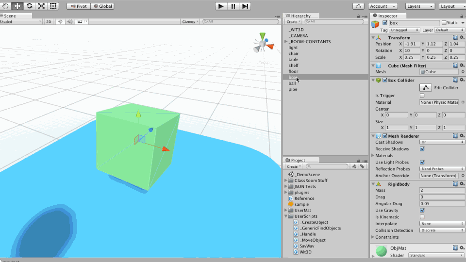
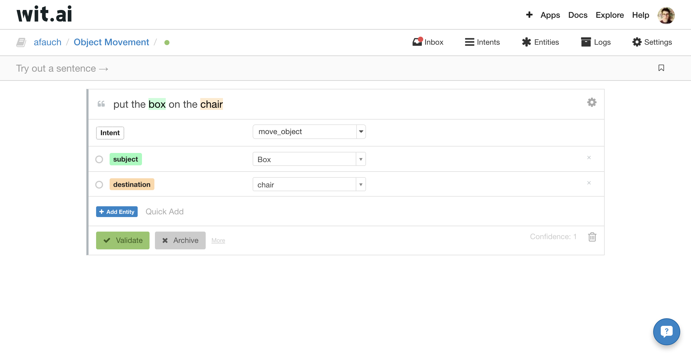
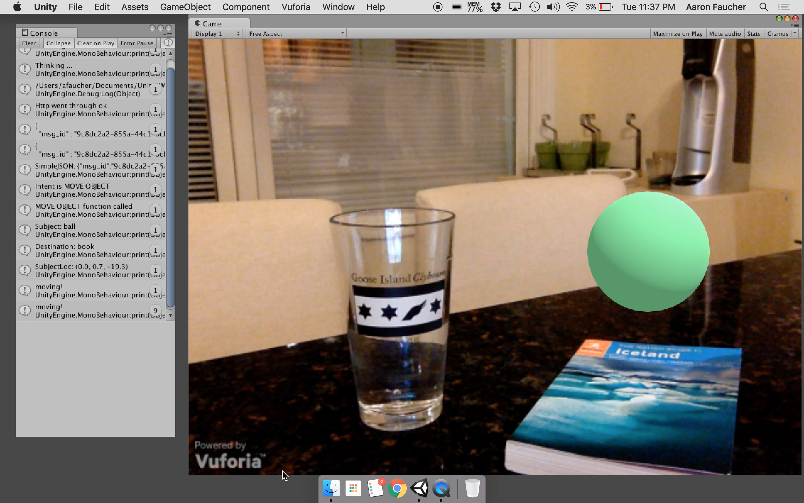

Wit3D

Conversation is one of the most natural means of interaction, and voice-based interfaces will play a significant role in future UI design. I built the Wit3D C# utility to give designers the power of natural language processing in their AR/VR applications.



As mixed-reality objects become more common, users must have the ability to interact with these digital objects intuitively.
Wit3D is an early attempt to bring the power of conversational UI into the world of AR/VR design.
Wit3D
-
Year
- 2016
Language
- C#
-
Roles
- Concept
- Design
- Development
Download
- Github
- Windows, Mac
-
Tools
- Unity
- Wit.ai
- SimpleJSON
- SavWav
-
Videos